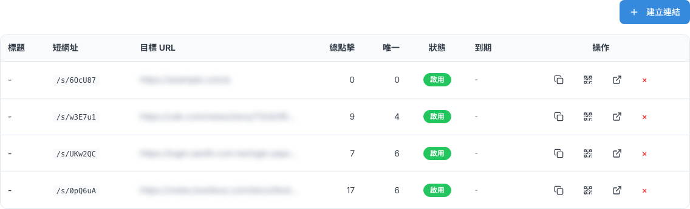
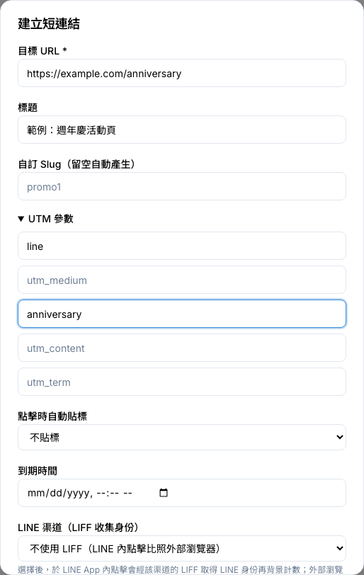
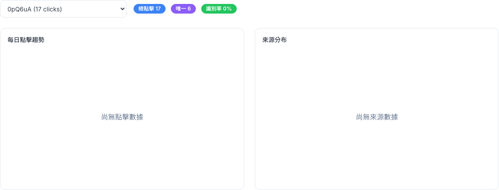

CHAPTER 12 · 行銷與渠道
短連結
把長網址縮成好分享、可追蹤的短網址，加上 UTM、點擊自動貼標、到期時間，還能產生 QR Code、查看點擊成效。
1 這頁能做什麼
短連結會把長網址變成 /s/代碼 這樣的短網址。它不只是變短：每次有人點，系統都會記下點了幾次、是不是同一個人，還能在客戶點擊時自動幫他貼上標籤，之後就能針對「點過這個連結的人」做行銷。側欄「行銷與渠道 > 短連結」底下有兩個選單：連結管理、統計分析。
連結管理看所有短連結與點擊數
建立短連結縮網址、加 UTM、自動貼標
點擊怎麼被計算總點擊、唯一點擊的差別
QR Code下載圖片印在文宣上
讓連結失效或刪除活動結束後怎麼處理
統計分析點擊趨勢與識別率
需要管理員開給你「檢視短連結」權限才看得到這頁；要建立、編輯、刪除，還要有「管理短連結」權限。
2 連結管理
「連結管理」用表格列出短連結，點擊數會自動更新，不用重新整理。

| 欄位 | 說明 |
|---|---|
| 標題 | 自己看的說明。廣播自動建立的連結會標示「素材連結（廣播自動建立）」（見下方提醒）；沒填標題的會顯示「-」 |
| 短網址 | 短連結的代碼 |
| 目標 URL | 點了之後會被帶到的原始網址 |
| 總點擊／唯一 | 總共被點幾次、大約有幾個人點（差別見第 4 節） |
| 狀態 | 啟用、已過期或停用 |
| 到期 | 失效日期，「-」表示不會過期 |
每一列最右邊的「操作」有四個小圖示，滑鼠移上去會出現名稱：
| 圖示 | 名稱 | 做什麼 |
|---|---|---|
| 兩張重疊的方塊 | 複製 URL | 把完整短網址複製起來，圖示變綠色就是複製好了 |
| 方格 QR 圖案 | QR Code | 打開 QR Code 視窗（第 5 節） |
| 斜上箭頭 ↗ | 編輯 | 修改這個連結。它長得像「開新視窗」，但其實是編輯 |
| 紅色 × | 刪除 | 永久刪除（第 6 節） |
⚠️
標題欄寫著「素材連結（廣播自動建立）」的連結，請盡量不要編輯或刪除。發廣播時，系統會把訊息裡的網址自動換成短連結來統計點擊。這些連結已經在客戶的聊天室裡了，改了目標網址，客戶會被帶到別的地方；刪掉的話，客戶點了只會看到「連結已失效」。編輯或刪除這類連結時，系統也會先跳出提醒。
ℹ️
清單會列出所有連結，「統計分析」的下拉選單也一樣。建立重要的連結時記得取個好認的標題，比較好找。
3 建立短連結
只有「目標 URL」是必填，其他都是讓追蹤更準、行銷更方便的選項，用得到再填。
- 側欄點「短連結 > 連結管理」，按右上角「建立連結」。
- 在「目標 URL」貼上原始網址（要以
https://或http://開頭）。 - 填「標題」，例如「週年慶活動頁」，之後在列表比較好找。
- 想要好記的網址，就在「自訂 Slug」填英文或數字，例如
anniv2026；留空系統會自動產生。 - 需要時展開「UTM 參數」，或設定「點擊時自動貼標」、「到期時間」、「LINE 渠道」、「社群預覽」。
- 按「建立」。新連結會出現在列表最上面。

| 欄位 | 說明 |
|---|---|
| 目標 URL | 必填。要縮短的原始網址 |
| 標題 | 只有後台看得到的說明 |
| 自訂 Slug（留空自動產生） | 短網址後面的代碼，只能用英文、數字、-、_。已經被用過的會提示你換一個。只有建立時能設定 |
| UTM 參數 | 五格分別是來源（utm_source，例如 line）、媒介（utm_medium）、活動名稱（utm_campaign）、內容（utm_content）、關鍵字（utm_term）。客戶點擊時會自動接到網址後面，讓 Google Analytics 分得出流量從哪來 |
| 點擊時自動貼標 | 選一個標籤，系統認得出點擊的是哪位客戶時，就會幫他貼上。認不出的點擊不會貼 |
| 到期時間 | 過了這個時間，連結就會失效，點了會看到「連結已失效」頁面 |
| LINE 渠道（LIFF 收集身份） | 選一個 LINE 官方帳號後，客戶在 LINE 裡點連結時，系統能認出他是誰，自動貼標和「唯一點擊」才會準 |
| 社群預覽（OG） | 把短連結貼到 LINE、Facebook 時跳出來的預覽卡標題、描述、圖片。三格都留空，系統會自動抓原始網頁的預覽 |
ℹ️
「LINE 渠道」要生效，那個 LINE 渠道必須先在「設定 > 渠道管理 > Bot 設定」填好「LIFF App ID」（見「15 · 渠道管理」）。沒填的話系統不會報錯，只會當成一般點擊，認不出客戶是誰。不確定有沒有設定，請問管理員。
編輯連結時要注意
- 在列表按該列的「編輯」（↗ 圖示），改完按「儲存」。
⚠️
改「目標 URL」會影響已經發出去的連結。客戶手上的短網址不變，但點了之後會被帶到新的網址。編輯廣播自動建立的素材連結時，對話框上方會出現黃色提醒。
ℹ️
編輯時可以把標題、UTM、社群預覽清空，或把自動貼標改回「不貼標」，按「儲存」後就會拿掉舊的值。
4 點擊怎麼被計算
這是短連結最需要了解的地方：不是每次「打開」都算一次點擊。系統會看是誰、用什麼打開：
| 情況 | 怎麼算 |
|---|---|
| LINE、Facebook 產生預覽卡 | 不算點擊。你把連結貼到群組，聊天室自動跑出預覽卡，那不是有人點 |
| 一般瀏覽器 | 記一次點擊，然後馬上跳到原始網址，客戶幾乎感覺不到 |
| 在 LINE 裡點 | 如果連結有選 LINE 渠道（而且那個渠道有設定 LIFF），系統會認出是哪位客戶；沒有的話就照一般瀏覽器算 |
| 在 Facebook、Instagram 裡點 | 照一般瀏覽器算 |
總點擊和唯一點擊
- 總點擊：每點一次就加 1，同一個人點 5 次就是 5。
- 唯一點擊：認得出是誰的時候，同一位客戶不管點幾次都只算 1。認不出是誰的時候，每次點都會算成一個新的人。
✨
想讓「唯一點擊」和「自動貼標」準一點，關鍵是讓系統認得出客戶：在 LINE 發的連結，建立時就選對應的 LINE 渠道，並確認那個渠道已經設定 LIFF App ID。
ℹ️
請不要拿正式活動的短網址自己點來測試，你的點擊也會被算進去，連結有設自動貼標的話還可能貼到你自己的測試帳號上。
5 QR Code
每個短連結都可以產生 QR Code，適合印在海報、DM、店內立牌上。客戶掃 QR Code 跟點短連結一樣，都會算進統計。
- 在列表找到那個連結，按「QR Code」圖示。
- 視窗會顯示 QR Code 和完整的短網址。
- 按「下載」存成圖片（檔名是
qr-標題.png），按「關閉」離開。
6 讓連結失效或刪除
活動結束後，你可能想讓連結不能再用。目前沒有「停用」開關，有兩種做法：
| 做法 | 結果 | 適合 |
|---|---|---|
| 「編輯」把「到期時間」設成現在或過去的時間 | 連結失效，點了會看到失效頁面；點擊紀錄都保留 | 大部分情況，建議用這個 |
| 按「刪除」（紅色 ×） | 連結和它的所有點擊統計一起永久刪除，無法復原 | 確定是建錯、完全用不到的連結 |
⚠️
刪除前會跳出「確定刪除此短連結？」，按確定就救不回來了。如果是廣播自動建立的素材連結，提醒會說明已發出的訊息會失效、點擊紀錄也會一併刪除，請盡量不要刪（見第 2 節）。
7 統計分析
選一個連結，就能看到它的點擊成效。
- 側欄點「短連結 > 統計分析」。
- 在「選擇連結」下拉選單挑一個連結（括號裡是點擊數）。
- 看上方三個數字和下方兩張圖。

| 項目 | 說明 |
|---|---|
| 總點擊／唯一 | 從建立到現在的累計數字（見第 4 節） |
| 識別率 | 最近 30 天的點擊裡，有多少比例認得出是哪位客戶 |
| 每日點擊趨勢 | 最近 30 天每天的總點擊與唯一點擊 |
| 來源分布 | 最近 30 天點擊是從哪個網頁帶過來的，取前 10 名，沒有來源的算「direct」 |
ℹ️
上方的「總點擊」「唯一」是累計數字，旁邊的「識別率」和兩張圖只算最近 30 天，所以老連結可能出現「總點擊 17、圖表是空的」的情況，這是正常的。
「來源分布」目前大多只會顯示 direct，參考就好；想知道客戶從哪個管道來，建議用不同的 UTM 或建不同的短連結來區分。
每日趨勢的日期是用國際標準時間切的，台灣時間早上 8 點以前的點擊會算在前一天。
「來源分布」目前大多只會顯示 direct，參考就好；想知道客戶從哪個管道來，建議用不同的 UTM 或建不同的短連結來區分。
每日趨勢的日期是用國際標準時間切的，台灣時間早上 8 點以前的點擊會算在前一天。
ℹ️
如果在「設定 > 追蹤設定」填了 GA4 或 Meta Pixel，短連結跳轉時也會一起送資料過去（見「17 · 其他設定」）。